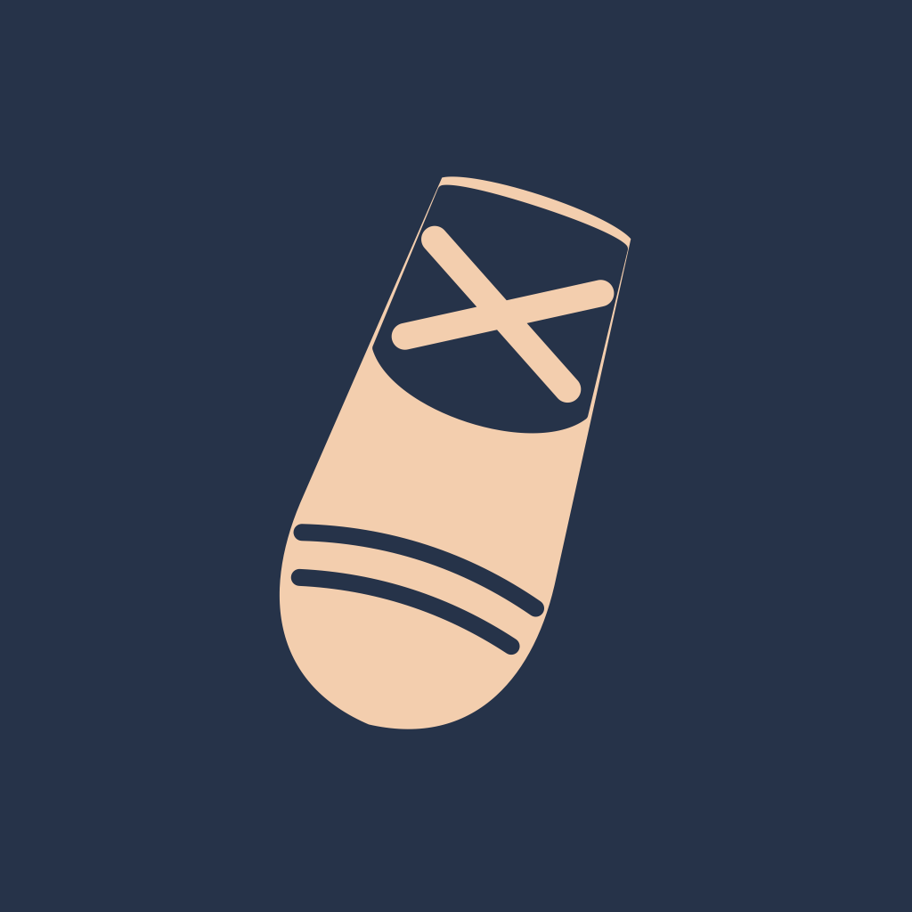

춤에 이름 붙이기
개인적으로 알아볼 이름과 교사와 논의한 분류를 기록합니다.

Ballet Solo독립 발레 학습 · Solo Grade 1
각 춤에서 내가 선택한 점을 살펴보세요. Ballet Solo Grade 1 Study는 직접 만든 지식 연습 자료와 세 솔로를 위한 개인 노트로 교사와 나눌 다음 이야기를 준비하도록 돕습니다.
출시 준비 중
앱 출시를 준비하고 있습니다. 아직 다운로드할 수 없습니다.
앱 학습 자료·노트·기본 화면은 영어입니다. 웹사이트는 한국어와 영어로 제공합니다.
My three-solo notes
날짜와 관찰 목표로 시작하세요. 각 춤에 개인적으로 알아볼 이름을 붙이고 교사와 논의한 분류를 적습니다. 나만의 단서, 함께 정한 목표와 관찰한 점을 정리할 수 있습니다.
개인적으로 알아볼 이름과 교사와 논의한 분류를 기록합니다.
집중할 부분과 연습 단서를 선택하고 알아차린 점을 남깁니다.
교사의 피드백과 다음에 다시 살펴볼 한 가지를 정리합니다.
노트에는 네 가지 관찰 초점이 있습니다. 직접 연습 내용을 기록하기 위한 선택이며, 자동으로 측정하는 점수가 아닙니다.
춤을 비교하며
춤을 비교하며 알아차린 단서나 변화를 별도 메모로 남길 수 있습니다. 교사에게 할 질문으로 마무리해 다음 연습에서 유용한 대화를 시작하세요.
직접 만든 시간제한 없는 지식 문제와 해설, 개념 자료와 저장한 문제를 살펴보세요. 성찰을 돕는 학습 자료이며 공식 안무를 재현하거나 시험 결과를 예측하지 않습니다.
Save로 노트를 기기에 저장하며 다시 열면 저장한 기록을 불러오도록 구성돼 있습니다. 저장하지 않은 편집은 저장된 내용과 구분됩니다. 클라우드 동기화·계정·자동 영상 평가는 제공하지 않으므로 중요한 기록은 별도로 보관해 주세요.
아닙니다. RushLabs가 독립적으로 개발한 학습 앱이며 Royal Academy of Dance 또는 정부 기관과 제휴하거나 해당 기관의 보증을 받지 않습니다. 실제 자격은 실기 평가로 운영되며 이 앱은 평가 운영이나 자격 부여를 제공하지 않습니다.
아닙니다. 교사와 논의한 분류는 개인 메모입니다. 앱이 응시 자격이나 레퍼토리를 확인·승인하거나 안무를 정해 주지는 않습니다. 최신 주관 기관 규칙을 확인하고 교사와 상의하세요.
아닙니다. 테크닉·음악·표현·기억은 직접 노트를 남기기 위해 고르는 관찰 초점입니다. 춤 녹화·영상 분석·공식 등급 산정이나 결과 예측은 제공하지 않습니다.
아직 출시 전입니다. 포함된 학습 자료와 노트를 제공하는 유료 다운로드 앱으로 준비하고 있습니다. 별도 구독은 활성화되어 있지 않습니다. 최종 가격과 지역별 제공 여부는 출시 후 스토어에서 안내합니다.
앱 출시를 준비하는 동안에도 지원 페이지와 전용 개인정보 처리방침을 확인할 수 있습니다.